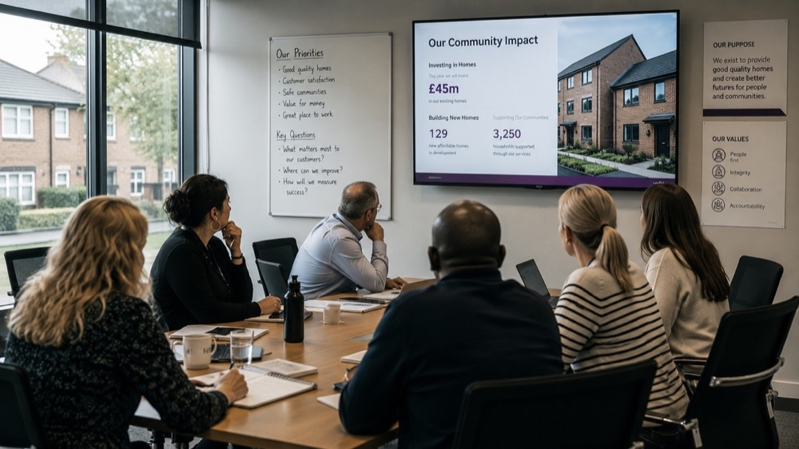
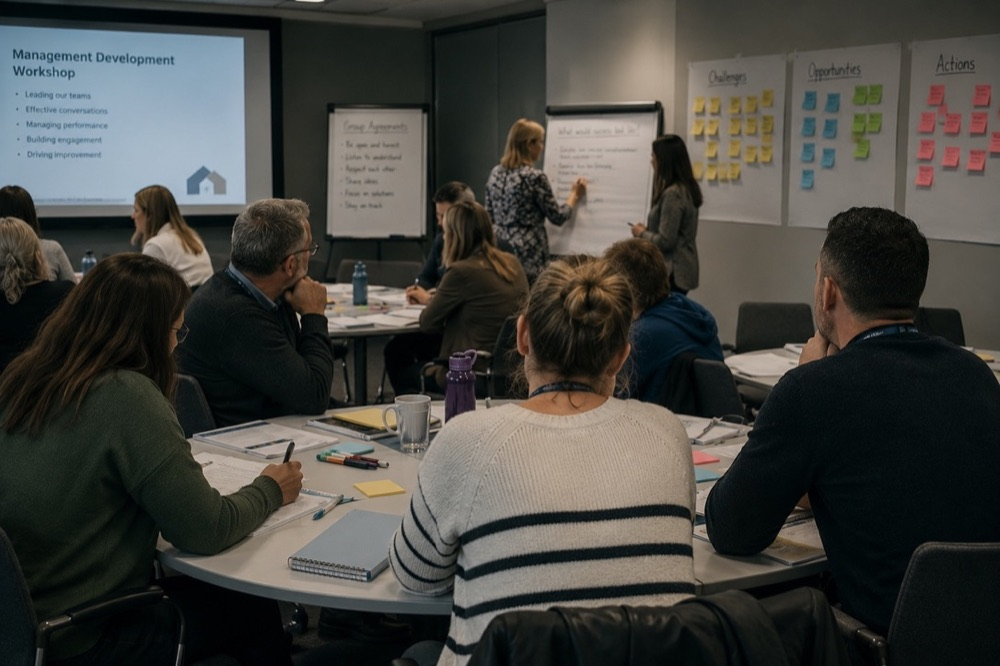

Managers who are ready on day one. Onboarding that doesn't rely on luck.
Specialist support for housing associations, ALMOs and local authority housing teams — covering manager onboarding, leadership development, succession planning and culture that's designed in, not left to chance.
Built for housing providers balancing service, growth and scrutiny.


Capability expertise, applied to how housing actually operates.
Manager & Leadership Onboarding
Structured onboarding for new and promoted managers, so capability doesn't depend on who happened to train them.
Values-Based Induction
Induction that makes culture and service expectations explicit from day one, not assumed through osmosis.
Succession Planning
Identifying and developing the next generation of managers before a vacancy forces a rushed decision.
Culture & Service Standards
Turning unwritten expectations into standards that can be trained to, measured against and held to account.
Workforce Capability Planning
Aligning roles, skills and structure to service demand — particularly through growth, merger or restructuring.
Digital Learning for Distributed Teams
Learning designed for teams spread across sites and neighbourhoods, not assuming everyone sits in one office.
The thinking we bring to every housing engagement.
The Golden Thread
One unbroken line from business need to business outcome. Read top to bottom, it is a design method; bottom to top, an audit tool. If an activity can’t be traced back to a performance requirement, why is it being done? From the book Training Isn’t Always the Answer.
Know where you are. See where to go.
Five stages of capability maturity — from reactive and ad-hoc to measured, optimised and continuously improving.
One method, five stages, every engagement.
Understand
Agree the outcome, the context and what good performance looks like before anyone discusses solutions.
Diagnose
Gather evidence, separate symptoms from causes and test whether the problem is knowledge, skill, process, system, structure or something else.
Define
Turn the diagnosis into clear requirements: the performance, behaviours, capabilities and conditions the solution must deliver.
Intervene
Choose the interventions that close the gap. Sometimes that is training. Often it is a process, a tool, a role, a decision or a combination.
Prove
Measure against the baseline agreed at the start, so the organisation knows what worked and what to do next.
Values and expectations have to be designed in — not left to osmosis.
Housing Leadership & Onboarding Transformation
Leadership pathways and values-based onboarding that made expectations explicit for new and promoted managers.
Structured, evidence-based capability work — grounded in how housing actually operates.
Common questions from housing leadership teams.
Usually not. Inconsistent management is more often a sign that expectations and standards were never written down, not that managers lack skills. The fix is usually structure and clarity, with development layered on top — not a course on its own.
Faster than most organisations expect, once values and expectations are designed into onboarding deliberately rather than left for new managers to learn by chance. The Housing Leadership & Onboarding Transformation case study shows how.
Yes. The same capability thinking applies whether you're a large G15 housing association, a smaller regional provider, or an ALMO managing stock on behalf of a local authority.
That's the usual arrangement. I work as a diagnostic and design partner alongside your existing team's capacity, not as a replacement for it.
From housing associations with a few hundred staff to organisations managing tens of thousands of homes. The Capability Readiness Review scales to the size of the problem, not a fixed engagement size.
Need housing leadership or onboarding support?
Tell me what you're facing — onboarding, manager capability or succession. A practical conversation, no sales pitch.